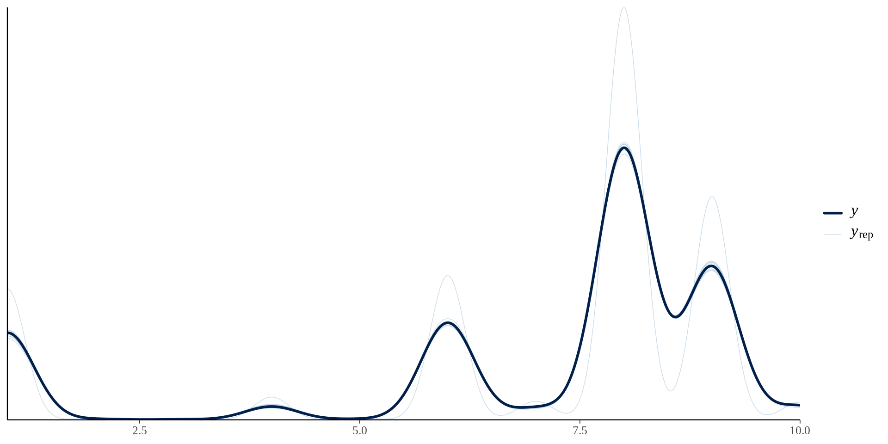
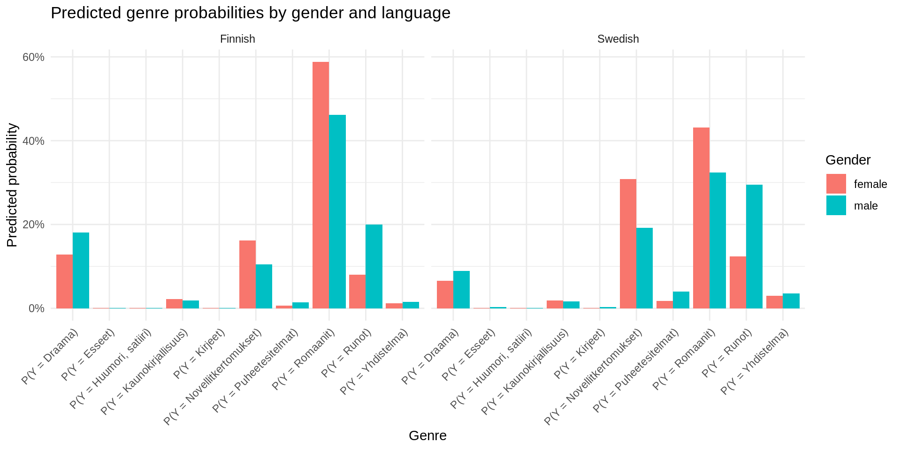
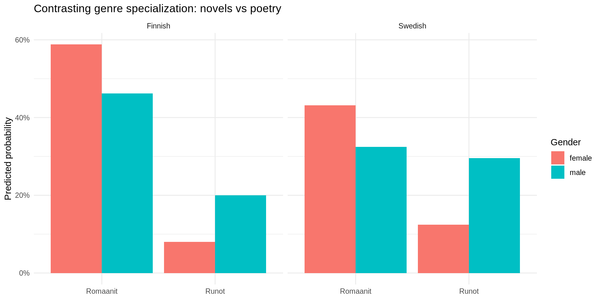

[1] 27430This Quarto notebook documents a step-by-step workflow for assessing whether genre from a fiction group is associated with selected bibliographic metadata variables before fitting a full multivariable model. The response variable is genre, and the predictors are gender and language. All variables are categorical.
The workflow is intentionally staged. First, simple descriptive summaries and association tests are used to evaluate whether relationships are present at all. Next, models are introduced only after basic structure has been established. The final stage estimates genre probabilities under a Bayesian framework, enabling probabilistic interpretation and uncertainty quantification.
Criteria: books published in 1809-1917. Genre (outcome) Nominal categorical (K>2) Gender Categorical(Male or Female or Unknown) Language Categorical (Finnish or Swedish or Unknown)
Multinomial logistic regression for each genre (Esseet, Huumori/satiiri, Kaunokirjallisuus, Kirjeet, Novellit/kertomukset, Puheet/esitelmät, Romaanit, Runot, Yhdistelmä)
[1] 27430[1] 12778 prior class coef group resp
(flat) b
(flat) b gender_primaryfemale
(flat) b gender_primaryUnknown
(flat) b languageSwedish
(flat) b languageUnknown
student_t(3, 0, 2.5) Intercept
(flat) b
(flat) b gender_primaryfemale
(flat) b gender_primaryUnknown
(flat) b languageSwedish
(flat) b languageUnknown
student_t(3, 0, 2.5) Intercept
(flat) b
(flat) b gender_primaryfemale
(flat) b gender_primaryUnknown
(flat) b languageSwedish
(flat) b languageUnknown
student_t(3, 0, 2.5) Intercept
(flat) b
(flat) b gender_primaryfemale
(flat) b gender_primaryUnknown
(flat) b languageSwedish
(flat) b languageUnknown
student_t(3, 0, 2.5) Intercept
(flat) b
(flat) b gender_primaryfemale
(flat) b gender_primaryUnknown
(flat) b languageSwedish
(flat) b languageUnknown
student_t(3, 0, 2.5) Intercept
(flat) b
(flat) b gender_primaryfemale
(flat) b gender_primaryUnknown
(flat) b languageSwedish
(flat) b languageUnknown
student_t(3, 0, 2.5) Intercept
(flat) b
(flat) b gender_primaryfemale
(flat) b gender_primaryUnknown
(flat) b languageSwedish
(flat) b languageUnknown
student_t(3, 0, 2.5) Intercept
(flat) b
(flat) b gender_primaryfemale
(flat) b gender_primaryUnknown
(flat) b languageSwedish
(flat) b languageUnknown
student_t(3, 0, 2.5) Intercept
(flat) b
(flat) b gender_primaryfemale
(flat) b gender_primaryUnknown
(flat) b languageSwedish
(flat) b languageUnknown
student_t(3, 0, 2.5) Intercept
dpar nlpar lb ub tag source
muEsseet default
muEsseet (vectorized)
muEsseet (vectorized)
muEsseet (vectorized)
muEsseet (vectorized)
muEsseet default
muHuumorisatiiri default
muHuumorisatiiri (vectorized)
muHuumorisatiiri (vectorized)
muHuumorisatiiri (vectorized)
muHuumorisatiiri (vectorized)
muHuumorisatiiri default
muKaunokirjallisuus default
muKaunokirjallisuus (vectorized)
muKaunokirjallisuus (vectorized)
muKaunokirjallisuus (vectorized)
muKaunokirjallisuus (vectorized)
muKaunokirjallisuus default
muKirjeet default
muKirjeet (vectorized)
muKirjeet (vectorized)
muKirjeet (vectorized)
muKirjeet (vectorized)
muKirjeet default
muNovellitkertomukset default
muNovellitkertomukset (vectorized)
muNovellitkertomukset (vectorized)
muNovellitkertomukset (vectorized)
muNovellitkertomukset (vectorized)
muNovellitkertomukset default
muPuheetesitelmat default
muPuheetesitelmat (vectorized)
muPuheetesitelmat (vectorized)
muPuheetesitelmat (vectorized)
muPuheetesitelmat (vectorized)
muPuheetesitelmat default
muRomaanit default
muRomaanit (vectorized)
muRomaanit (vectorized)
muRomaanit (vectorized)
muRomaanit (vectorized)
muRomaanit default
muRunot default
muRunot (vectorized)
muRunot (vectorized)
muRunot (vectorized)
muRunot (vectorized)
muRunot default
muYhdistelma default
muYhdistelma (vectorized)
muYhdistelma (vectorized)
muYhdistelma (vectorized)
muYhdistelma (vectorized)
muYhdistelma defaultRunning /usr/lib/R/bin/R CMD SHLIB foo.c
using C compiler: ‘gcc (Ubuntu 11.4.0-1ubuntu1~22.04.2) 11.4.0’
gcc -I"/usr/share/R/include" -DNDEBUG -I"/home/ubuntu/R/x86_64-pc-linux-gnu-library/4.5/Rcpp/include/" -I"/home/ubuntu/R/x86_64-pc-linux-gnu-library/4.5/RcppEigen/include/" -I"/home/ubuntu/R/x86_64-pc-linux-gnu-library/4.5/RcppEigen/include/unsupported" -I"/home/ubuntu/R/x86_64-pc-linux-gnu-library/4.5/BH/include" -I"/home/ubuntu/R/x86_64-pc-linux-gnu-library/4.5/StanHeaders/include/src/" -I"/home/ubuntu/R/x86_64-pc-linux-gnu-library/4.5/StanHeaders/include/" -I"/home/ubuntu/R/x86_64-pc-linux-gnu-library/4.5/RcppParallel/include/" -I"/home/ubuntu/R/x86_64-pc-linux-gnu-library/4.5/rstan/include" -DEIGEN_NO_DEBUG -DBOOST_DISABLE_ASSERTS -DBOOST_PENDING_INTEGER_LOG2_HPP -DSTAN_THREADS -DUSE_STANC3 -DSTRICT_R_HEADERS -DBOOST_PHOENIX_NO_VARIADIC_EXPRESSION -D_HAS_AUTO_PTR_ETC=0 -include '/home/ubuntu/R/x86_64-pc-linux-gnu-library/4.5/StanHeaders/include/stan/math/prim/fun/Eigen.hpp' -D_REENTRANT -DRCPP_PARALLEL_USE_TBB=1 -fpic -g -O2 -ffile-prefix-map=/build/r-base-xupQTd/r-base-4.5.2=. -fstack-protector-strong -Wformat -Werror=format-security -Wdate-time -D_FORTIFY_SOURCE=2 -c foo.c -o foo.o
In file included from /home/ubuntu/R/x86_64-pc-linux-gnu-library/4.5/RcppEigen/include/Eigen/Core:19,
from /home/ubuntu/R/x86_64-pc-linux-gnu-library/4.5/RcppEigen/include/Eigen/Dense:1,
from /home/ubuntu/R/x86_64-pc-linux-gnu-library/4.5/StanHeaders/include/stan/math/prim/fun/Eigen.hpp:22,
from <command-line>:
/home/ubuntu/R/x86_64-pc-linux-gnu-library/4.5/RcppEigen/include/Eigen/src/Core/util/Macros.h:679:10: fatal error: cmath: No such file or directory
679 | #include <cmath>
| ^~~~~~~
compilation terminated.
make: *** [/usr/lib/R/etc/Makeconf:202: foo.o] Error 1in 2: Iteration: 1800 / 2000 [ 90%] (Sampling) Family: categorical
Links: muEsseet = logit; muHuumorisatiiri = logit; muKaunokirjallisuus = logit; muKirjeet = logit; muNovellitkertomukset = logit; muPuheetesitelmat = logit; muRomaanit = logit; muRunot = logit; muYhdistelma = logit
Formula: genre ~ gender_primary + language
Data: df_fiction (Number of observations: 12778)
Draws: 4 chains, each with iter = 2000; warmup = 1000; thin = 1;
total post-warmup draws = 4000
Regression Coefficients:
Estimate Est.Error l-95% CI
muEsseet_Intercept -5.02 0.32 -5.68
muHuumorisatiiri_Intercept -5.47 0.38 -6.28
muKaunokirjallisuus_Intercept -2.26 0.09 -2.43
muKirjeet_Intercept -5.22 0.35 -5.97
muNovellitkertomukset_Intercept -0.54 0.05 -0.63
muPuheetesitelmat_Intercept -2.55 0.10 -2.76
muRomaanit_Intercept 0.94 0.03 0.87
muRunot_Intercept 0.10 0.04 0.02
muYhdistelma_Intercept -2.49 0.10 -2.68
muEsseet_gender_primaryfemale -1.03 0.73 -2.53
muEsseet_gender_primaryUnknown -0.66 0.77 -2.23
muEsseet_languageSwedish 1.70 0.43 0.84
muEsseet_languageUnknown 0.76 0.71 -0.67
muHuumorisatiiri_gender_primaryfemale -0.64 0.81 -2.26
muHuumorisatiiri_gender_primaryUnknown 1.96 0.53 0.86
muHuumorisatiiri_languageSwedish 0.75 0.55 -0.36
muHuumorisatiiri_languageUnknown -0.34 0.87 -2.12
muKaunokirjallisuus_gender_primaryfemale 0.46 0.20 0.06
muKaunokirjallisuus_gender_primaryUnknown 1.45 0.18 1.10
muKaunokirjallisuus_languageSwedish 0.52 0.16 0.19
muKaunokirjallisuus_languageUnknown 0.71 0.26 0.20
muKirjeet_gender_primaryfemale -0.97 0.72 -2.43
muKirjeet_gender_primaryUnknown -0.09 0.73 -1.60
muKirjeet_languageSwedish 1.85 0.44 1.00
muKirjeet_languageUnknown 1.29 0.66 -0.07
muNovellitkertomukset_gender_primaryfemale 0.78 0.10 0.58
muNovellitkertomukset_gender_primaryUnknown 1.21 0.12 0.98
muNovellitkertomukset_languageSwedish 1.31 0.08 1.16
muNovellitkertomukset_languageUnknown 1.09 0.15 0.80
muPuheetesitelmat_gender_primaryfemale -0.54 0.27 -1.10
muPuheetesitelmat_gender_primaryUnknown 0.19 0.28 -0.37
muPuheetesitelmat_languageSwedish 1.75 0.15 1.47
muPuheetesitelmat_languageUnknown 0.14 0.38 -0.66
muRomaanit_gender_primaryfemale 0.59 0.09 0.42
muRomaanit_gender_primaryUnknown 0.60 0.11 0.40
muRomaanit_languageSwedish 0.36 0.07 0.21
muRomaanit_languageUnknown 0.16 0.13 -0.09
muRunot_gender_primaryfemale -0.57 0.11 -0.79
muRunot_gender_primaryUnknown 1.54 0.11 1.34
muRunot_languageSwedish 1.10 0.08 0.95
muRunot_languageUnknown 0.72 0.14 0.45
muYhdistelma_gender_primaryfemale 0.14 0.20 -0.26
muYhdistelma_gender_primaryUnknown 1.45 0.18 1.09
muYhdistelma_languageSwedish 1.55 0.14 1.27
muYhdistelma_languageUnknown 0.20 0.35 -0.53
u-95% CI Rhat Bulk_ESS Tail_ESS
muEsseet_Intercept -4.42 1.00 4563 2929
muHuumorisatiiri_Intercept -4.78 1.00 4446 3193
muKaunokirjallisuus_Intercept -2.08 1.00 4448 2625
muKirjeet_Intercept -4.59 1.00 4085 2826
muNovellitkertomukset_Intercept -0.45 1.00 2845 2662
muPuheetesitelmat_Intercept -2.36 1.00 4673 3564
muRomaanit_Intercept 1.00 1.00 3163 3098
muRunot_Intercept 0.17 1.00 3265 2825
muYhdistelma_Intercept -2.29 1.00 3710 3010
muEsseet_gender_primaryfemale 0.29 1.00 4771 2784
muEsseet_gender_primaryUnknown 0.72 1.00 4705 3287
muEsseet_languageSwedish 2.54 1.00 4289 3189
muEsseet_languageUnknown 2.06 1.00 4743 3070
muHuumorisatiiri_gender_primaryfemale 0.87 1.00 4518 2689
muHuumorisatiiri_gender_primaryUnknown 2.97 1.00 3945 2823
muHuumorisatiiri_languageSwedish 1.79 1.00 5107 3110
muHuumorisatiiri_languageUnknown 1.27 1.00 5149 3022
muKaunokirjallisuus_gender_primaryfemale 0.84 1.00 3865 3128
muKaunokirjallisuus_gender_primaryUnknown 1.82 1.00 2817 2922
muKaunokirjallisuus_languageSwedish 0.83 1.00 3950 3012
muKaunokirjallisuus_languageUnknown 1.20 1.00 3872 3194
muKirjeet_gender_primaryfemale 0.35 1.00 4465 3035
muKirjeet_gender_primaryUnknown 1.23 1.00 4969 2962
muKirjeet_languageSwedish 2.74 1.00 4581 2907
muKirjeet_languageUnknown 2.53 1.00 4363 2835
muNovellitkertomukset_gender_primaryfemale 0.97 1.00 2059 2254
muNovellitkertomukset_gender_primaryUnknown 1.45 1.00 1568 2539
muNovellitkertomukset_languageSwedish 1.48 1.00 1803 2213
muNovellitkertomukset_languageUnknown 1.38 1.00 2420 2590
muPuheetesitelmat_gender_primaryfemale -0.05 1.00 4371 2667
muPuheetesitelmat_gender_primaryUnknown 0.72 1.00 3347 3065
muPuheetesitelmat_languageSwedish 2.05 1.00 3125 2801
muPuheetesitelmat_languageUnknown 0.85 1.00 3964 2788
muRomaanit_gender_primaryfemale 0.76 1.00 1877 2336
muRomaanit_gender_primaryUnknown 0.81 1.00 1539 2134
muRomaanit_languageSwedish 0.51 1.00 1811 2096
muRomaanit_languageUnknown 0.44 1.00 2299 2665
muRunot_gender_primaryfemale -0.34 1.00 2062 2134
muRunot_gender_primaryUnknown 1.75 1.00 1567 2371
muRunot_languageSwedish 1.26 1.00 1863 2354
muRunot_languageUnknown 1.00 1.00 2146 2445
muYhdistelma_gender_primaryfemale 0.54 1.00 3958 3154
muYhdistelma_gender_primaryUnknown 1.79 1.00 2490 2676
muYhdistelma_languageSwedish 1.83 1.00 2824 2703
muYhdistelma_languageUnknown 0.84 1.00 3328 3063
Draws were sampled using sampling(NUTS). For each parameter, Bulk_ESS
and Tail_ESS are effective sample size measures, and Rhat is the potential
scale reduction factor on split chains (at convergence, Rhat = 1).
Min. 1st Qu. Median Mean 3rd Qu. Max.
0.6231 0.9261 0.9669 0.9509 0.9893 1.0000 , , P(Y = Draama)
Estimate Est.Error Q0.5 Q50 Q99.5
male | Finnish 0.18135409 0.004617223 0.17016143 0.18130068 0.19340649
female | Finnish 0.12845697 0.009004590 0.10613949 0.12831325 0.15269445
Unknown | Finnish 0.07325640 0.006582515 0.05680549 0.07324676 0.09101425
male | Swedish 0.08923371 0.005265056 0.07571074 0.08922966 0.10365085
female | Swedish 0.06607155 0.005951966 0.05240688 0.06593517 0.08281472
Unknown | Swedish 0.02996632 0.003402030 0.02201833 0.02982972 0.03915859
male | Unknown 0.11881249 0.012505650 0.08809116 0.11844311 0.15430811
female | Unknown 0.08400683 0.010984527 0.05885855 0.08356693 0.11502391
Unknown | Unknown 0.04128379 0.005967397 0.02775391 0.04088479 0.05897938
, , P(Y = Esseet)
Estimate Est.Error Q0.5 Q50
male | Finnish 0.0012549143 0.0003981386 4.773735e-04 0.0012131220
female | Finnish 0.0003903959 0.0002946308 3.636519e-05 0.0003137372
Unknown | Finnish 0.0003347264 0.0002732076 2.609958e-05 0.0002570600
male | Swedish 0.0033660434 0.0010408531 1.310598e-03 0.0032592634
female | Swedish 0.0010914923 0.0008133654 1.012353e-04 0.0008780063
Unknown | Swedish 0.0007559987 0.0006350823 5.979950e-05 0.0005765487
male | Unknown 0.0021093069 0.0014740711 2.249297e-04 0.0017366978
female | Unknown 0.0006584475 0.0006928573 3.189753e-05 0.0004282520
Unknown | Unknown 0.0004945077 0.0005757802 1.713278e-05 0.0003095631
Q99.5
male | Finnish 0.002528148
female | Finnish 0.001573990
Unknown | Finnish 0.001574456
male | Swedish 0.006622379
female | Swedish 0.004557913
Unknown | Swedish 0.003751447
male | Unknown 0.007840488
female | Unknown 0.003861818
Unknown | Unknown 0.003341722
, , P(Y = Huumori, satiiri)
Estimate Est.Error Q0.5 Q50
male | Finnish 0.0008173707 0.0003093228 2.597874e-04 0.0007720547
female | Finnish 0.0003971213 0.0003511027 3.095421e-05 0.0002891221
Unknown | Finnish 0.0024179319 0.0011357410 5.543811e-04 0.0022146917
male | Swedish 0.0008913563 0.0004394902 1.784028e-04 0.0008141824
female | Swedish 0.0004470851 0.0004175329 2.589744e-05 0.0003202023
Unknown | Swedish 0.0022529668 0.0014233894 2.999404e-04 0.0019410130
male | Unknown 0.0005226617 0.0005104084 3.090236e-05 0.0003660261
female | Unknown 0.0002449053 0.0003309224 5.360922e-06 0.0001366782
Unknown | Unknown 0.0013633848 0.0015069709 5.742717e-05 0.0008802102
Q99.5
male | Finnish 0.001878572
female | Finnish 0.002044889
Unknown | Finnish 0.006514730
male | Swedish 0.002486129
female | Swedish 0.002373965
Unknown | Swedish 0.007800304
male | Unknown 0.002853962
female | Unknown 0.002185057
Unknown | Unknown 0.008666108
, , P(Y = Kaunokirjallisuus)
Estimate Est.Error Q0.5 Q50 Q99.5
male | Finnish 0.01906983 0.001624869 0.01520136 0.01902443 0.02341288
female | Finnish 0.02166291 0.003651768 0.01329606 0.02145424 0.03272777
Unknown | Finnish 0.03298875 0.004390189 0.02278088 0.03282441 0.04595041
male | Swedish 0.01591048 0.002157314 0.01078721 0.01575522 0.02234330
female | Swedish 0.01888869 0.003731652 0.01066743 0.01857110 0.02991117
Unknown | Swedish 0.02290672 0.004171598 0.01341253 0.02260906 0.03681267
male | Unknown 0.02573447 0.005782957 0.01384284 0.02528738 0.04238098
female | Unknown 0.02922897 0.008125249 0.01341305 0.02827712 0.05406827
Unknown | Unknown 0.03836245 0.009939998 0.01826255 0.03744796 0.06864479
, , P(Y = Kirjeet)
Estimate Est.Error Q0.5 Q50
male | Finnish 0.0010424964 0.0003544049 3.563288e-04 0.0009981333
female | Finnish 0.0003470869 0.0002725296 3.136463e-05 0.0002731509
Unknown | Finnish 0.0004737215 0.0003744068 4.107786e-05 0.0003736898
male | Swedish 0.0032241655 0.0010305865 1.221345e-03 0.0031197265
female | Swedish 0.0011105657 0.0008296928 1.187755e-04 0.0008812598
Unknown | Swedish 0.0012365038 0.0009927175 1.130172e-04 0.0009705185
male | Unknown 0.0028050820 0.0017352370 3.705080e-04 0.0024015073
female | Unknown 0.0009402064 0.0009543772 4.631606e-05 0.0006429188
Unknown | Unknown 0.0011195075 0.0012044873 5.454949e-05 0.0007378903
Q99.5
male | Finnish 0.002159011
female | Finnish 0.001523020
Unknown | Finnish 0.002230506
male | Swedish 0.006554744
female | Swedish 0.004649419
Unknown | Swedish 0.005754073
male | Unknown 0.009304194
female | Unknown 0.005677243
Unknown | Unknown 0.006894113
, , P(Y = Novellitkertomukset)
Estimate Est.Error Q0.5 Q50 Q99.5
male | Finnish 0.1052589 0.003587002 0.09646063 0.1052238 0.1145398
female | Finnish 0.1617089 0.008910557 0.13986323 0.1615625 0.1857289
Unknown | Finnish 0.1428659 0.008198362 0.12260633 0.1426777 0.1651858
male | Swedish 0.1921821 0.006909578 0.17476338 0.1920253 0.2099513
female | Swedish 0.3084292 0.014362322 0.27079186 0.3081638 0.3464694
Unknown | Swedish 0.2166450 0.012680548 0.18648512 0.2164798 0.2496664
male | Unknown 0.2036870 0.015360074 0.16807046 0.2032577 0.2443056
female | Unknown 0.3118583 0.024197093 0.25258950 0.3108575 0.3771269
Unknown | Unknown 0.2375747 0.021345315 0.18707487 0.2373047 0.2935500
, , P(Y = Puheetesitelmat)
Estimate Est.Error Q0.5 Q50 Q99.5
male | Finnish 0.014180951 0.001406074 0.010700298 0.014119141 0.01796052
female | Finnish 0.005978294 0.001518696 0.002714280 0.005851571 0.01094654
Unknown | Finnish 0.007073308 0.001761714 0.003409951 0.006931855 0.01225276
male | Swedish 0.040251276 0.003823971 0.030894707 0.040044638 0.05095502
female | Swedish 0.017724352 0.004410236 0.008355044 0.017349712 0.03146641
Unknown | Swedish 0.016722988 0.004331249 0.007766587 0.016166678 0.02953638
male | Unknown 0.011234121 0.003953735 0.003790680 0.010731473 0.02420771
female | Unknown 0.004730988 0.002053303 0.001228677 0.004402619 0.01209777
Unknown | Unknown 0.004836152 0.002134750 0.001229440 0.004432798 0.01275490
, , P(Y = Romaanit)
Estimate Est.Error Q0.5 Q50 Q99.5
male | Finnish 0.4620264 0.00612504 0.4460317 0.4620536 0.4777680
female | Finnish 0.5881106 0.01277279 0.5558689 0.5880697 0.6209694
Unknown | Finnish 0.3382062 0.01176129 0.3089517 0.3378291 0.3691905
male | Swedish 0.3245118 0.00846640 0.3030708 0.3244756 0.3469491
female | Swedish 0.4317487 0.01422047 0.3966017 0.4321663 0.4684984
Unknown | Swedish 0.1973830 0.01014157 0.1731873 0.1972827 0.2245802
male | Unknown 0.3546925 0.01822905 0.3065933 0.3544174 0.4043073
female | Unknown 0.4502906 0.02431799 0.3867304 0.4502222 0.5150683
Unknown | Unknown 0.2233069 0.01680537 0.1813720 0.2227417 0.2692069
, , P(Y = Runot)
Estimate Est.Error Q0.5 Q50 Q99.5
male | Finnish 0.19985521 0.004950418 0.18724349 0.19990442 0.21273175
female | Finnish 0.08045031 0.006264297 0.06548558 0.08018382 0.09741958
Unknown | Finnish 0.37625639 0.011797035 0.34644104 0.37633957 0.40658487
male | Swedish 0.29527915 0.008470885 0.27411757 0.29528082 0.31792750
female | Swedish 0.12419897 0.009426295 0.10200394 0.12387370 0.15004118
Unknown | Swedish 0.46168843 0.015433673 0.42084698 0.46149350 0.50139509
male | Unknown 0.26771903 0.016952557 0.22589164 0.26728763 0.31120617
female | Unknown 0.10757916 0.011424984 0.08122854 0.10718217 0.14126921
Unknown | Unknown 0.43283116 0.024899681 0.36758493 0.43266986 0.49562004
, , P(Y = Yhdistelma)
Estimate Est.Error Q0.5 Q50 Q99.5
male | Finnish 0.01513988 0.001436274 0.011760397 0.01509862 0.01901610
female | Finnish 0.01249738 0.002354076 0.007302786 0.01233362 0.01960881
Unknown | Finnish 0.02612673 0.003775931 0.017741275 0.02602267 0.03704275
male | Swedish 0.03514993 0.003355873 0.027229802 0.03505454 0.04439713
female | Swedish 0.03028946 0.005536680 0.018347876 0.02988190 0.04683145
Unknown | Swedish 0.05044212 0.007743821 0.032695389 0.05005935 0.07289184
male | Unknown 0.01268337 0.004047038 0.005008840 0.01221922 0.02507317
female | Unknown 0.01046161 0.003858598 0.003499608 0.00995435 0.02468972
Unknown | Unknown 0.01882738 0.006435656 0.006811496 0.01794398 0.03892148

Several genres (Esseet, Huumori/satiiri, Kirjeet) are extremely rare in the corpus, with predicted probabilities well below 1% across all gender–language groups. Due to these very small base rates and relatively wide credible intervals, no substantive conclusions can be drawn for these genres.
Clear and systematic differences emerge for the major genres. Women exhibit higher predicted probabilities of writing both novels (Romaanit) and short prose (Novellit, kertomukset) than men in both language groups. Among Finnish-language publications, the posterior mean probability of novels is approximately 13 percentage points higher for women than for men, while among Swedish-language publications the corresponding difference is about 11 percentage points. Similar for short prose.
In contrast, poetry (Runot) is more strongly associated with male authors in both languages, with consistently higher predicted probabilities for men than for women. This pattern is particularly pronounced in Swedish-language publications. Thus, poetry is associated with male authors and Swedish-language publications (both true).
Drama (Draama) also appears to be more strongly associated with male authors, especially in Finnish-language publications. However, this result should be interpreted with caution, as the drama category contains a relatively large proportion of records with missing or uncertain metadata, which may influence the estimated probabilities.
Overall, the results indicate a clear gendered pattern in genre specialization, with women concentrating more heavily in long and short prose forms, while men are relatively more represented in poetry and drama. Language effects are substantial and often comparable in magnitude to gender effects, highlighting the importance of considering both dimensions jointly.